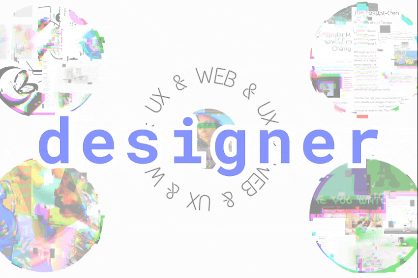
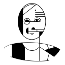
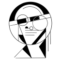
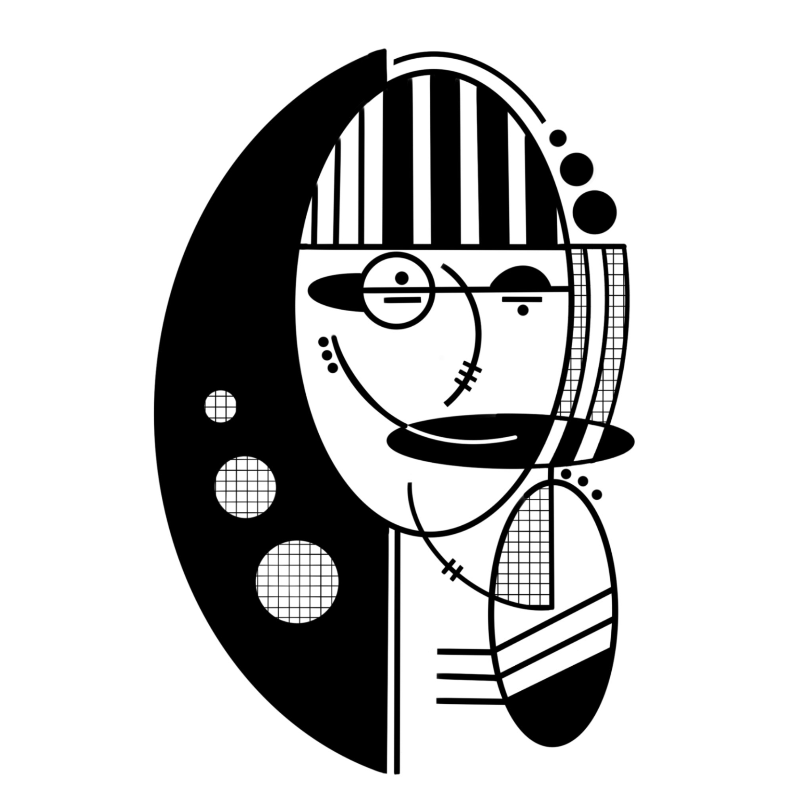
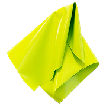
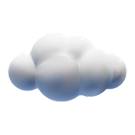
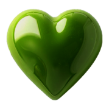
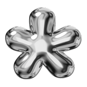
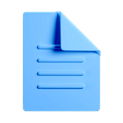

Tulsi will be building at Block starting January :D
Mood: enjoying the autumn foliage and excited for a new chapter!!

Keiichi Matsuda, Director @ Liquid City
Tulsi’s work at Liquid City consists of researching, designing, prototyping and documenting novel XR and AI-based experiences. Tulsi plays an important role throughout the development of each project, bringing her strong research and rapid prototyping skills, and independent spirit. Tulsi is comfortable working quickly in many forms of media, and a quick study in the many tools and emerging technologies she is uses in her work.

Andrew Roth, Founder @ dcdx
Tulsi is one of those people that just get it. Her ability to find deeper meaning amidst a sea of noise is unparalleled, and her seemingly intuitive understanding of human behavior is scarily on point. The work she did with us at dcdx over a year ago as an intern still stands the test of time as some of our most thought-provoking and loved writing from our audience.

Asha Toulmin, Director of UX Research @ CNN
+ Creative: Tulsi comes up with new ideas, thoughts and ways of approaching things
+ Fearless: Tulsi is never afraid to speak up, contribute and address something
+ Proactive: Tulsi truly shows up to what she is invited to, and is always looking to do more and to explore more
Agnieska Kroczek, Product Designer @ CNN
Creative, well-spoken, collaborative, and insightful. I worked with Tulsi on a research project at CNN Underscored. Her research compilation was so effective that it would remain a pattern to follow. Tulsi’s super strength is her openness to tackle projects big and small. She brings energy, freshness, intellect, and a creative spark. Working with Tulsi has been a pleasure, and I can't wait to see what she'll tackle next!

XR / AI
creative projects
user research
much more!
resume.pdf
Hi! I'm Tulsi :)
I'm a multidisciplinary designer who works with a variety of mediums to craft intentional experiences that push technology toward its most positive potential. I love postmodern philosophy, ducks, and the colors you're seeing!
I hope you enjoy browsing my site. Open folders to see projects, hover on icons to see a preview, and don't forget play around with the features on the bottom bar.